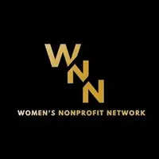
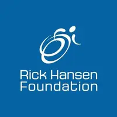
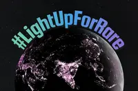
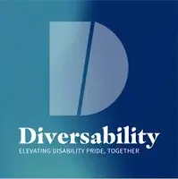
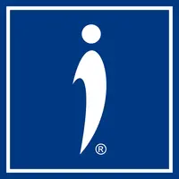

As Seen On
Television & Broadcast


Television Appearances
Lauren is a trusted media voice on invisible disabilities, rare disease awareness, workplace inclusion, and building resilience through joy. She has appeared on national networks as an expert commentator for Invisible Disabilities Week, Rare Disease Day, Disability Pride Month, and National AccessAbility Week.
CTV Your Morning
Disability Pride Month — Jul 2025
CityNews Toronto
Rare Disease Day — Feb 2025
CHCH Morning Live
Dating with an Invisible Disability — Feb 2025
Breakfast Television
Rare Disease Day — Feb 2024
CityNews Toronto — Rare Disease Day
CityNews Toronto — Feb 2024
CityNews Toronto — Speaker Slam Grand Slam Winners
CityNews Toronto — Nov 2023
OMNI News: Focus Punjabi — Invisible Disabilities Week
OMNI Television — Oct 2023
CityNews Toronto — Walk & Roll for Mobility Awareness Month
CityNews Toronto — May 2023
As Seen On
Print, Digital, Radio & Podcasts


Articles, Interviews & Features
Accessibility For All Magazine — February 2026 Feature
Accessibility For All Magazine — Feb 2026
Town Hall Set to Be Lit Up for Rare Disease Day
Oakville News — Feb 2026
Rare Disease Day Lights Up Brampton and Mississauga
Mississauga.com — Feb 2026
Newmarket Bridge Going Blue for Rare Disease Day
Newmarket Today — Feb 2026

Lauren Pires: RHFSP Ambassador Hopes to Bring Disability Representation to Youth
Rick Hansen Foundation — 2025
SiriusXM Canada — Invisible Disabilities Week Interview
SiriusXM Canada — Oct 2025
Building Inclusion Through Empathy
Canadian SME Magazine — Jun 2025
Niagara Joins Global Movement to Honour Canadians Living with a Rare Disease
Niagara-on-the-Lake Local — Feb 2025
Niagara Joins Global Movement to Honour Canadians Living with a Rare Disease
Thorold Today — Feb 2025
Newmarket Bridge Will Light Up for Rare Disease Day
Newmarket Today — Feb 2025
My (Muscle) Weakness Is Also My Strength: Life with an Invisible Disability
Ramona Magazine — Nov 2024
Mississauga Residents Living with Disabilities Hit Hard by Higher Cost of Living
Mississauga News — Oct 2024
30 Global Leaders in Disability Awareness — and This Mississauga Woman Is Among Them
InSauga — Jul 2024
On The Move With Invisible Disabilities
Accessible Journeys Magazine — Apr 2024
Global Chain of Lights Coming to Newmarket for Rare Disease Day
Newmarket Today — Feb 2024
From Scars to Stars — Issue 47
AwareNow Magazine — Feb 2024
Niagara Sign Shines in Support of Rare Disease Day
Niagara-on-the-Lake Local — Feb 2024
International Speaking Contest Sees Second-Place Finish for Mississauga Woman
InSauga — Nov 2023
Worldwide Speaking Contest Features Two Mississauga Women Vying for Top Spot
InSauga — Nov 2023
A Decade of Disability Awareness: Invisible Disabilities Association Marks Anniversary
Global News — Oct 2023
Meet Lauren Pires
CanvasRebel — Oct 2023
Mississauga Woman Named First-Ever Canadian Recipient of IDA Award
Modern Mississauga — Oct 2023
Being Your Own Powerhouse: The Story of Lauren
RareDiseaseDay.org — Feb 2023
Recognition
Awards & Achievements
Lauren's advocacy work has been recognized by organizations across North America, from international disability nonprofits to national speaking platforms.
2026
Certified Professional Speaker
Lauren earned her Certified Professional Speaker designation, a milestone recognizing her commitment to the craft and her growing impact as a keynote speaker on disability, resilience, and inclusion across corporate, government, and educational stages.

2025
DEIB Award Finalist — Women's Nonprofit Network
Named a finalist for the Diversity, Equity, Inclusion & Belonging Award by the Women's Nonprofit Network, presented by GreenShield, recognizing her advocacy and 11+ years of impact in the nonprofit and disability sectors.

2025
Rick Hansen Foundation School Program Ambassador
Selected as an Ambassador for the Rick Hansen Foundation School Program, bringing disability awareness and lived-experience presentations to K-12 classrooms across Canada. Lauren's presentations have reached thousands of students, including one virtual session attended by over 900 students.

2025
#LightUpForRare Campaign — 26 Landmarks, 18 Cities
Lauren led a national awareness campaign for Rare Disease Day 2026, coordinating the lighting of 26 Canadian landmarks across 18 cities. In 2024, she organized 13 buildings for Invisible Disabilities Week lighting — the first time many had participated.

2024
Top 30 Global Disability Leader — Diversability
Named to the D-30 Disability Impact List by Diversability, recognizing Lauren as one of 30 global leaders making a significant impact in disability awareness, advocacy, and representation.

2023
Canada's First IDA Ambassador & "But You LOOK Good" Award
Lauren made history as the first Canadian recipient of the "But You LOOK Good" Inspiration Award from the Invisible Disabilities Association, joining past honorees including Wayne Brady and Yolanda Hadid. She was simultaneously named Canada's first and only IDA Ambassador, and has since raised over $5,000 USD for the organization.

2023
#2 Inspirational Speaker of the Year — Speaker Slam
Competed in Speaker Slam's Grand Slam — the inspirational speaking finals of North America's largest inspirational speaking competition — and was named the #2 Inspirational Speaker of the Year. It was the first time Lauren publicly shared her practice of the Daily Yay on stage.
Media Inquiries
Lauren is available for interviews, panels, commentary, and guest features on disability, resilience, and inclusion.
Get in Touch